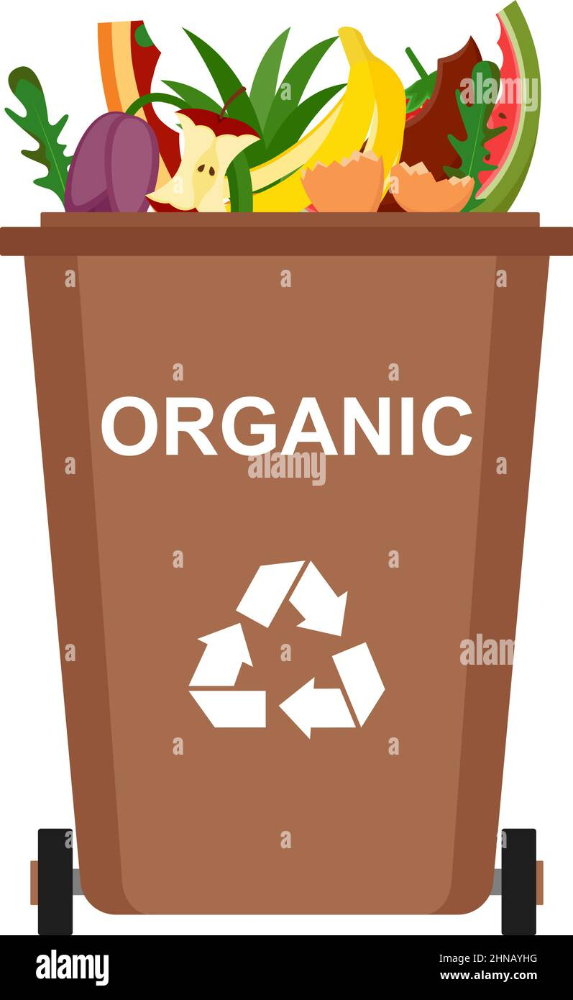
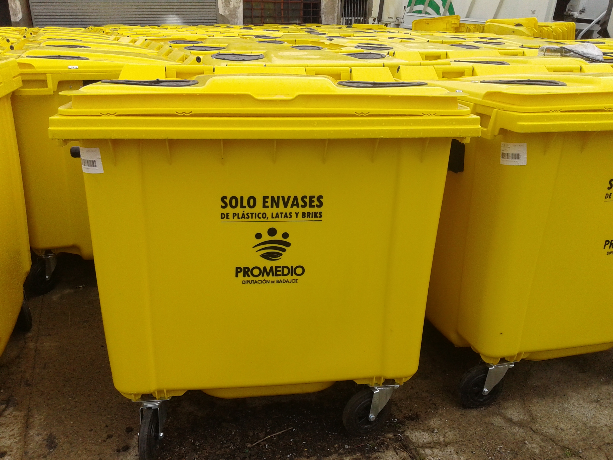
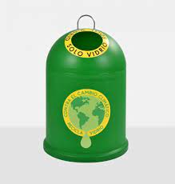

para empezar, las cosas que estan hechas de papel, se tiran en papeleras azules como esta
restos de la comida que comisteis ayer en la cena
después, las cosas de plástico, como el envase del yogurt que te comiste el otro día, o la botella de plástico, etc...
Por último, en los contenedores verdes en el que tengan escrito vidrio, tienes tirar las botellas, espejos, vasos rotos, cualquier cosa hecha de cristal